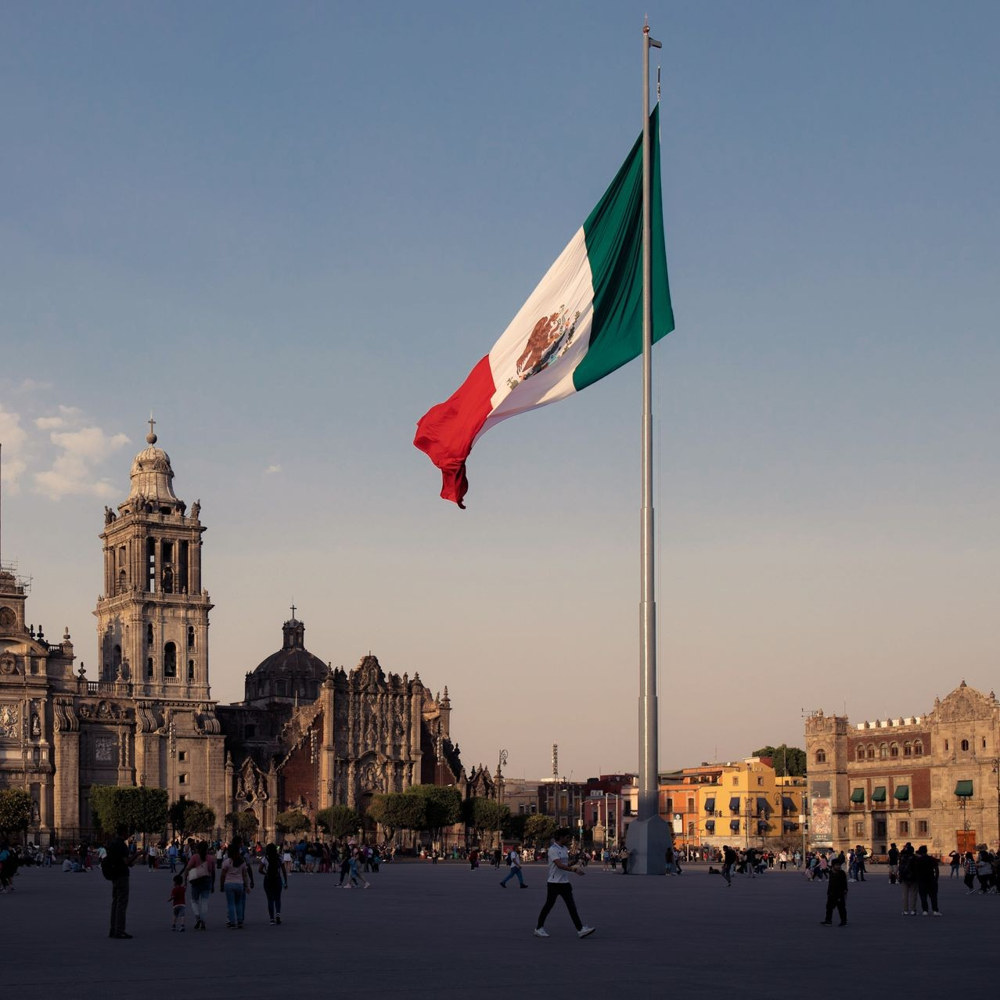

Mexico
From the Yucatán's Ancient Wonders to Mexico City's Vibrant Streets
My Mexican odyssey commenced in the bustling capital city, Mexico City. Roaming the historic streets of the Zócalo, I marveled at the architectural wonders, including the Metropolitan Cathedral and the National Palace. A visit to the Anthropology Museum provided insights into Mexico's ancient civilizations. Sampling street food like tacos al pastor and tlayudas introduced me to the country's delectable cuisine.
 No journey through Mexico would be complete without a visit to the awe-inspiring Chichen Itza in the Yucatán Peninsula. Exploring the ancient Mayan ruins, I marveled at the precision of El Castillo, the Pyramid of Kukulcan. Witnessing the equinox phenomenon, where shadows create the illusion of a serpent descending the pyramid, was a mystical experience. Cool cenotes (natural sinkholes) provided refreshing swims amid the jungle's lush greenery.
Traveling to Oaxaca, I discovered a region steeped in tradition and artistry. Visiting the vibrant markets of Oaxaca City, I admired the intricate handcrafted textiles, vibrant alebrijes (wooden sculptures), and the world-famous Oaxacan pottery. Exploring the archaeological site of Monte Albán allowed me to delve into the region's ancient Zapotec history.
My adventure led me to Cancún and the Riviera Maya, where I soaked up the sun on pristine beaches and swam in the crystal-clear waters of the Caribbean Sea. Snorkeling in the Great Maya Reef, the world's second-largest coral reef, revealed a mesmerizing underwater world teeming with colorful marine life. Exploring the eco-parks like Xcaret and Xel-Há provided exhilarating adventures, including swimming in cenotes and observing wildlife.
Guanajuato, a city of vibrant colors and winding alleys, beckoned with its charm. Exploring the historic city center, I admired the colorful facades and vibrant plazas. A visit to the Museo de las Momias (Museum of the Mummies) offered a glimpse into the city's unique history. Attending a live performance at the iconic Teatro Juárez showcased Guanajuato's thriving arts scene.
My journey took me to the Copper Canyon in the Sierra Madre Occidental, a natural wonder often compared to the Grand Canyon. Riding the Chihuahua al Pacífico Railway, known as "El Chepe," I marveled at the canyon's breathtaking vistas and crossed towering bridges. Hiking trails allowed me to explore the rugged terrain and interact with the indigenous Tarahumara people, known for their long-distance running prowess.
San Miguel de Allende, a city known for its colonial elegance, captivated me with its picturesque streets and well-preserved architecture. The Parroquia de San Miguel Arcángel, with its neo-Gothic facade, was a striking sight. Exploring the local art scene and attending traditional Mexican festivals provided a deeper understanding of the city's vibrant culture.
As I reflect on my journey across Mexico, I am enchanted by the country's diverse beauty and cultural richness, from the ancient wonders of Chichen Itza to the vibrant streets of Mexico City, the artistry of Oaxaca to the coastal paradise of Cancún, the colorful alleys of Guanajuato to the natural grandeur of Copper Canyon, and the colonial elegance of San Miguel de Allende. Mexico's warm hospitality, deep-rooted traditions, and culinary delights have left an indelible mark on my heart.
Join me in future travels as I continue to explore the captivating regions of the Americas, each offering its own unique blend of beauty and cultural richness. Until next time, keep your spirit of adventure alive, and may your travels lead you to the wonders of the world. ¡Viva México!